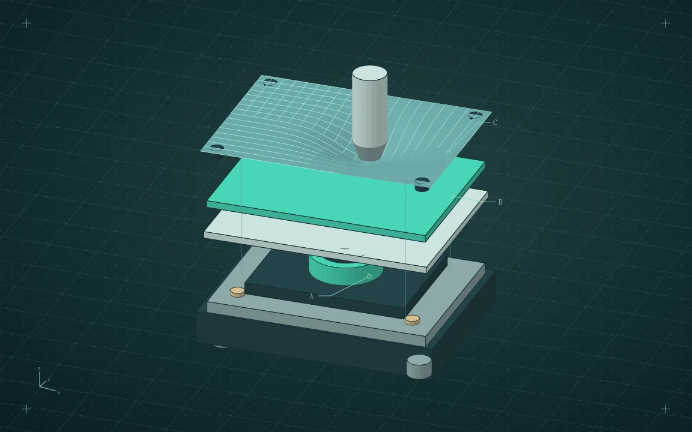

视触觉采集与三轴力估计Tactile Data and Force Estimation
用 Flexiv 机械臂重复执行按压、旋转和剪切动作，把触觉图像与接触载荷对应起来。A Flexiv arm repeats indentation, rotation, and shear motions so that tactile images can be paired with the loads that produced them.

先把一次接触记录清楚Recording a single contact
一张触觉图像能显示传感器表面的变化。为了用它估计力，还得知道那一刻机械臂在哪里、施加了多少载荷。我从采集流程着手，把每次接触的图像与这些信息放进同一份记录。A tactile image shows how the sensor surface changes under contact. To use that image to estimate force, I also need to know the robot pose and the load at the time of capture. I started by building the acquisition procedure around those records.
我搭建自动化采集平台，编写数据关联与质检流程，并实现、训练和部署三轴力估计模型。I built the acquisition platform and its data checks, then implemented, trained, and deployed a model for three-axis contact force estimation.
控制接触条件Control the contact conditions
配置接触位置、压入深度或目标载荷，让机械臂在可复现的条件下按压、旋转或平移传感器接触面。I parameterised the contact location, indentation depth, and target load so that experiments could be repeated under known conditions.
为每张触觉图找到对应的载荷Pair images with loads
将触觉图像、六维力和力矩、工具中心点位姿及加载条件关联存储，检查缺失记录并可视化采集轨迹。The recorder associates tactile images with six-axis force and torque, tool-centre-point pose, and loading conditions. I added checks for missing data and tools to visualise the sampling paths.
从图像估计三轴接触力Estimate force from images
使用 MAE ViT 编码器与双头潜变量结构开展分阶段训练。将模型用于实时推理，并与机器人的参考力信号对照。I trained a model with an MAE ViT encoder and a dual-head latent architecture in stages, then deployed it for real-time comparison with the robot’s force feedback.
回到真机看预测Comparing predictions with hardware readings
在真机上对照触觉模型的三轴输出与机器人参考力。另用 Blender 批量渲染形变网格，生成用于观察接触形变的图像。I compared three-axis force predictions with the robot’s reference signals on hardware. A separate Blender pipeline rendered deformation meshes in batches for visual inspection.